Στην σημερινή δωρεάν Apache Maven ενότητα θα εξηγήσουμε τι είναι
το Apache Maven Lifecycle και πως αυτό συνδυάζεται με τα phases,
τα plugins και τα goals τα οποία θα χρησιμοποιήσετε σε καθημερινή
βάση σαν προγραμματιστής. Πριν όμως προχωρήσουμε σε περισσότερες λεπτομέρειες,
ας κάνουμε μια γρήγορη επανάληψη για το τι έχουμε αναλύσει μέχρι τώρα
στις προηγούμενες ενότητες.
Βασικά, θα έχετε ήδη καταλάβει, ότι σκοπός του Maven, αν υπάρχουν πάρα
πολλά θετικά που μπορούμε να αναφέρουμε, είναι κυρίως να μας βοηθήσει
να πραγματοποιήσουμε δύο βασικούς στόχους:
- Να μας βοηθήσει να χτίσουμε το project μας σωστά και με εύκολο τρόπο.
- Να ενσωματώσει τις απαραίτητες βιβλιοθήκες που χρειάζεται το project για να τρέξει σωστά.
Η περιγραφή των δύο βασικών στόχων του Maven γίνεται μέσω ενός XML αρχείου που
ονομάζεται Project Object Model ή όπως ήδη γνωρίζουμε όλοι POM.
Σαν τελικό βήμα, επιλέξαμε την εντολή install , από την Lifecycle
λίστα του IntelliJ, για να χτίσουμε το project μας. Γιατί τρέξαμε
την εντολή install? Υπάρχουν και άλλες εντολές που χρειάζεται να
τρέξουμε? Ας δούμε λοιπόν τι είναι το Apache Maven Lifecycle και
πως αυτό συνδυάζεται με την εντολή install που εκτελέσαμε την προηγούμενη ενότητα.
Το Apache Maven έχει καθορίσει ότι για την σωστή διαχείριση ενός
project θα χρησιμοποιήσει την κεντρική ιδέα του Lifecycle. Αυτό σημαίνει
ότι όλη η διαδικασία κατασκευής και διανομής μιας εφαρμογής είναι απόλυτα
καθορισμένη σε κάθε βήμα της. Για τον προγραμματιστή, αυτό σημαίνει ότι είναι
απαραίτητο να μάθει μόνο ένα μικρό σύνολο εντολών για να εξασφαλίσει το
επιθυμητό αποτέλεσμα.
Εφόσον λοιπόν το Apache Maven στηρίζεται στην λογική του Lifecycle, αλλά
πόσα Lifecycles έχουμε? Υπάρχουν τρία Lifecycles που χρησιμοποιεί το Apache
Maven για να κατηγοριοποιήσει καλύτερα την λειτουργία τους :
- clean – Αυτό διαχειρίζεται τον καθαρισμό αρχείων της εφαρμογής
που υπάρχουν στον target φάκελο. Αυτήν την πράξη την εκτελούμε πριν
κάνουμε build ξανά το project επειδή αλλάξαμε πχ τον κώδικα της εφαρμογής.
- default - Αυτό χειρίζεται όλη την ανάπτυξη, δημιουργία και την εγκατάσταση της εφαρμογής.
- site – Αυτό χειρίζεται την δημιουργία documentation για
τον κώδικα σας και κατά συνέπεια της εφαρμογής σας.
Τα πιο πάνω Lifecycles είναι το θεωρητικό σκέλος του Apache Maven.
Πρακτικά, κάθε Lifecycle είναι χωρισμένο σε phases και η εκτέλεση
κάθε ενός phase γίνεται με την εκτέλεση των goals. Στο επίσημο site
του Apache Maven μπορούμε να δούμε τα phases από τα οποία αποτελείται
κάθε Lifecycle μαζί με μια σύντομη
περιγραφή (https://maven.apache.org/guides/introduction/introduction-to-the-lifecycle.html) .
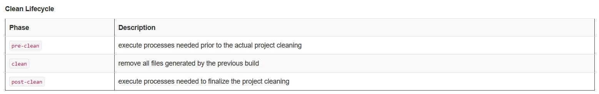
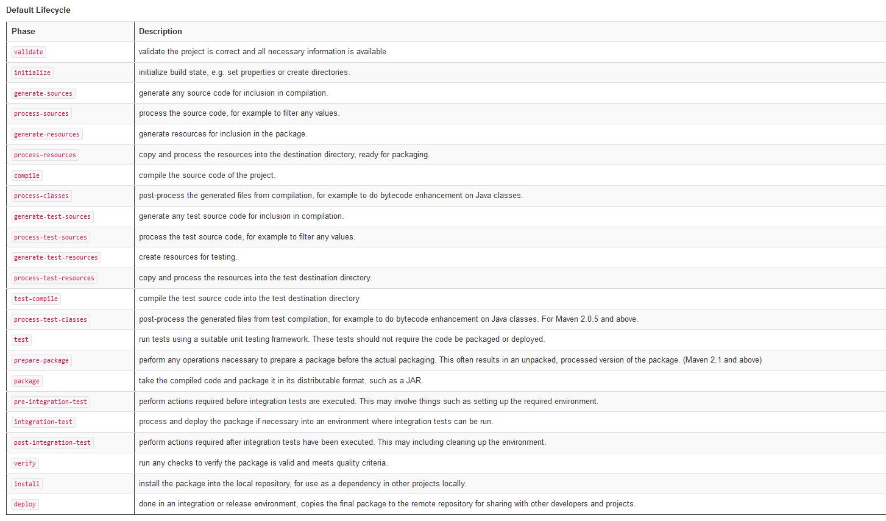

Υπάρχουν λοιπόν goals τα οποία ορίζουν τα phases τα οποία θα εκτελεστούν σε κάθε lifecycle.
Αλλά από που προέρχονται αυτά τα goals? Αυτά διατίθενται μέσα από plugins τα οποία εξ ορισμού μας
προσφέρει το Apache Maven χωρίς εμείς να εγκαταστήσουμε τίποτε περισσότερο. Οπότε αν θέλουμε να δώσουμε
ένα πιο ολοκληρωμένο ορισμό για το Apache Maven Lifecycle θα λέγαμε το εξής:
Το lifecycle του Apache Maven αποτελείται από ένα σύνολο καθορισμένων φάσεων που
ονομάζονται phases. Κάθε phase ομαδοποιεί ένα σύνολο από goals που ορίζονται από
τα plugins του Maven και η σειρά εκτέλεσή τους ορίζεται από το Lifecycle. Κάθε
plugin είναι ένα γκρουπ από goals όπου κάθε goal είναι υπεύθυνο για την εκτέλεση
μιας συγκεκριμένης ενέργειας.
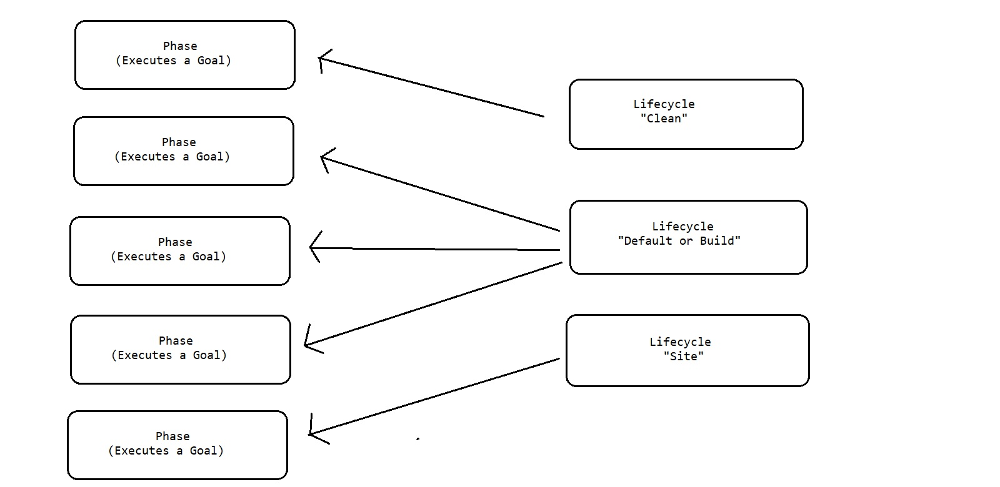
Ας δούμε όμως όλα όσα ήδη έχουμε αναφέρει στην πράξη για να τα κατανοήσουμε ακόμα καλύτερα.
Ανοίγουμε το tab Maven στο IntelliJ και επεκτείνουμε το Plugins
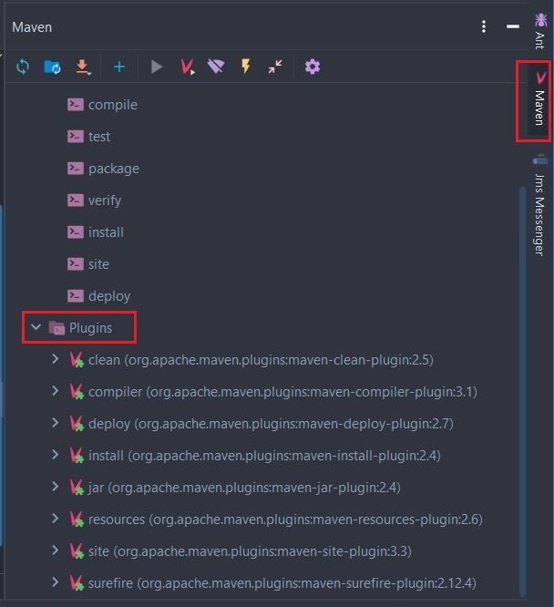
Εδώ βλέπουμε όλα τα plugins που είναι διαθέσιμα σε εμάς από την εγκατάσταση
και μόνο του Apache Maven. Όπως ήδη έχουμε αναφέρει, κάθε plugin είναι μια
ομάδα από goals που μπορούμε να εκτελέσουμε. Ας πάρουμε για παράδειγμα το
plugin clean. Από το site του Apache Maven μπορούμε να διακρίνουμε ότι το
clean lifecycle ορίζει τρία phases: pre-clean, clean και post-clean. Όταν
γράφουμε mvn clean τότε θα εκτελεστούν όλα τα phases μέσα στο clean Lifecycle
μέχρι και το clean phase. Εδώ το όνομα clean έτυχε να είναι ίδιο με το όνομα
του Lifecycle. Δεν μπορούμε να εκτελέσουμε ένα Lifecycle με το όνομα του –
εκτελούμε μόνο phases. Όταν λοιπόν γράψουμε το mvn clean το Maven θα βρει σε
ποιο Lifecycle ανήκει και θα εκτελέσει όλα τα phases μέχρι και το clean
(συμπεριλαμβάνει και το clean). Από που τρέχουμε τα goals? Μπορούμε να τα
γράψουμε πατώντας επάνω στο V εικονίδιο (ονομάζεται Execute Maven Goal) και
αφού τυπώσουμε την εντολή να πατήσουμε Enter για να εκτελεστεί.
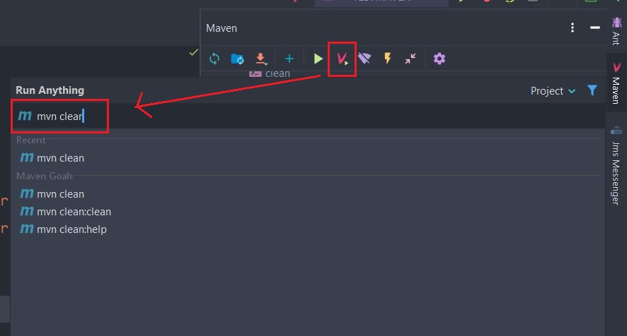
Το mvn clean θα καθαρίσει όλα τα target αρχεία που είχαν δημιουργηθεί με την
εντολή install. Αυτή η ενέργεια είναι επιθυμητή συνήθως όταν αλλάζουμε τον κώδικα της εφαρμογής.
Προσέξτε όταν πριν εκτελέσουμε την εντολή clean υπάρχει το target directory
αλλά όχι μετά την εκτέλεσή της.
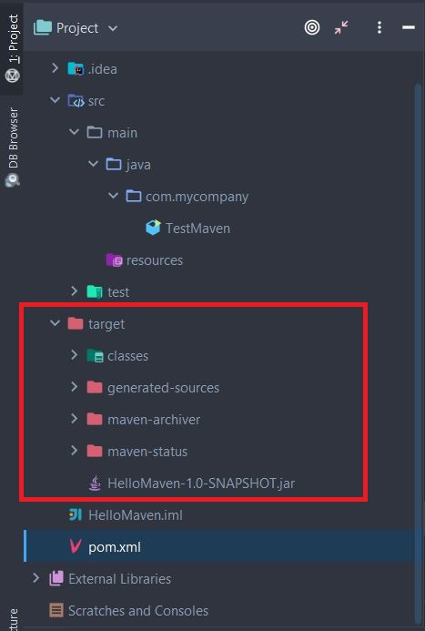
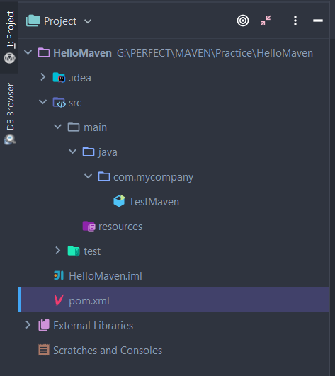
Για να βρούμε τώρα περισσότερες πληροφορίες γύρω από το Maven clean plugin
έχουμε δύο τρόπους – ο πρώτος είναι μέσα από εντολή και ο
δεύτερος μέσα από το γραφικό περιβάλλον του IntelliJ. Πατάμε
λοιπόν πάλι το κουμπί Execute Maven Goal και γράφουμε την εξής εντολή:
mvn help:describe -Dplugin=clean
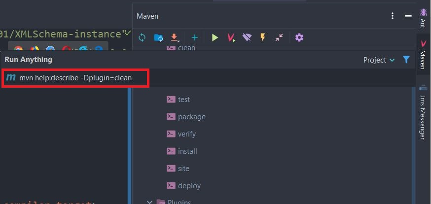
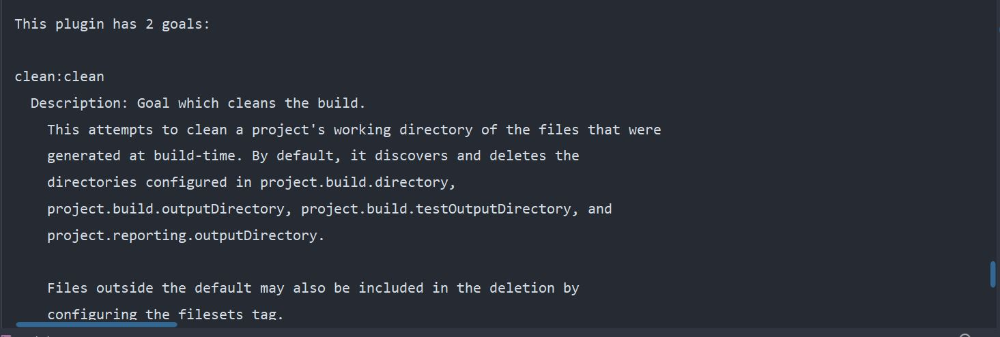
Ενώ αν θέλουμε να δούμε πόσα ακόμα phases περιλαμβάνονται στο clean lifecycle γράφουμε την εξής εντολή:
mvn help:describe -Dcmd=clean
Εδώ χρησιμοποιούμε ένα plugin από το Apache Maven που
ονομάζεται help. Με το colon ( : ) ορίζουμε το goal του plugin
που είναι describe. Τέλος περνάμε την παράμετρο clean στο goal
describe με το-Dcmd.
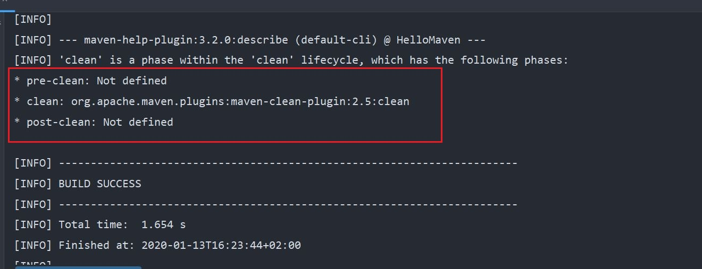
Εδώ διακρίνουμε ότι υπάρχουν τρεις phases που ορίζουν το lifecycle
του clean όμως ένα μόνο είναι ενεργοποιημένο. Το αποτέλεσμα είναι
ότι όποτε τρέχουμε το goal clean στην ουσία τρέχουμε ένα phase μόνο.
Αυτό το phase περιέχει, όπως είδαμε με την εντολήmvn help:describe -Dplugin=clean,
δύο goals – το clean και help. Κάθε goal από τα plugins μπορεί να εκτελεστεί μόνο
του ή να δηλωθεί σαν μέρος κάποιου phase στο Apache build Lifecycle. Αυτό θα γίνει
πιο ξεκάθαρο στην επόμενη ενότητα.
Μέσα από το IntelliJ μπορούμε να δούμε τα goals που περιέχονται μέσα στο clean plugin
πατώντας απλά το βελάκι δίπλα από το plugin.
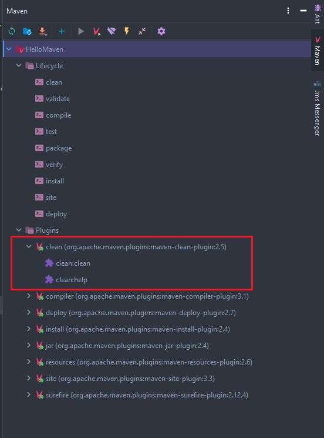
Για να εκτελέσετε οποιοδήποτε goal, απλά κάνετε διπλό κλικ επάνω του και
αυτόματα θα εκτελεστεί σαν να τρέχατε την αντίστοιχη εντολή.
Όπως βλέπετε, τα πάντα μέσα στο Maven είναι plugins που μας προσφέρουν
ομαδοποιημένες εντολές προς εκτέλεση με την μορφή goals. Πολλά
goals μαζί δημιουργούν ένα phase και πολλά phases μαζί δημιουργούν
ένα Lifecycle. Αν προσέξετε, την πιο πάνω εικόνα θα παρατηρήσετε
ότι για να εκτελεστεί το clean goal πρέπει να γράψουμε mvn clean:clean.
Το πρώτο clean είναι το όνομα του plugin ενώ το δεύτερο είναι το όνομα του goal.
Με τον ίδιο τρόπο μπορούμε να τρέξουμε οποιοδήποτε goal από τα υπόλοιπα plugins
που εμφανίζονται στην λίστα.
Αν τώρα θέλουμε να συνδυάσουμε όλα όσα είπαμε για το Clean Lifecycle θα μπορούσαμε
να λέγαμε τα εξής: Υπάρχει το Clean Lifecycle που αν και ορίζει τρία phases μόνο
ένα phase είναι εξ ορισμού ενεργοποιημένο. Όταν λοιπόν καλούμε να εκτελεστεί το clean
phase, τότε το Maven ψάχνει να βρει ποιο plugin
περιέχει το goal clean και το εκτελεί. Γραφικά μπορούμε να το περιγράψουμε κάπως έτσι:
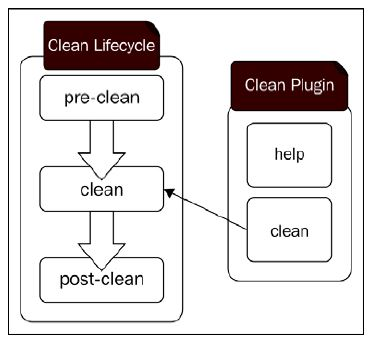
Όταν λοιπόν γράφουμε mvn clean, που είναι η πιο συνηθισμένη εντολή,
στην ουσία εκτελείται το clean goal. Το οποίο όμως είναι μέρος
του clean Lifecycle οπότε θα εκτελεστούν και όλα τα phases που υπάρχουν
πριν από αυτό με την σειρά μέχρι να εκτελεστεί το clean. Το Apache Maven έχει
ορίσει το clean goal του clean plugin να εκτελείται κατά την διάρκεια του clean
phase στο clean Lifecycle.
Στην επόμενη ενότητα θα μιλήσουμε για το Default Lifecycle όπως και για το
Lifecycle που υπάρχει στο IntelliJ μέσα από το οποίο είχαμε
εκτελέσει την εντολή install.
Michail Kassapoglou Admin
Γεια σας, είμαι ο Μιχάλης Κασάπογλου και θα σας διδάξω με τον ποιο απλό
τρόπο να χρησιμοποιείτε το Apache Maven για την δημιουργία όλων των Java και Java EE project σας. Ασχολούμαι με την τεχνική εκπαίδευση
σε διάφορες πλατφόρμες, λειτουργικά συστήματα και γλώσσες προγραμματισμού
πάνω από 20 έτη. Κατέχω έναν αρκετά μεγάλο αριθμό πιστοποιήσεων Microsoft και Oracle
και σαν Τraining Lead στην Intrasoft έχω την δυνατότητα να αναβαθμίζω συνεχώς
τις γνώσεις μου και να έχω άμεση επαφή με αληθινά projects και εξειδικευμένες μεθόδους
ανάπτυξης εφαρμογών που έχουν υψηλές απαιτήσεις.
Για τυχόν ερωτήσεις σας μπορείτε να επικοινωνήσετε μαζί μου
στο Michail.Kassapoglou@gmail.com
Σας ευχαριστώ που επισκεφτήκατε την ιστοσελίδα μου.